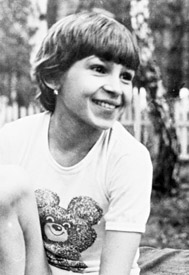

Tatiana Godenko (USSR)
1986 Champions All AA Gold Medalist

Tatiana was born in Krasnoyarsk
in 1972 and began gymnastics at age 7. Her coach was Valentin Shevchuk.
In 1987, at a training camp in Alma-Ata, she landed poorly on a bars dismount
and tore knee ligaments. Her dream of making the Soviet Olympic team was
over.
Tatiana graduated from Krasnoyarsk Secondary School No. 71 (with a mathematics
concentration) with excellent grades. She asked Shevchuk to recommend her
to the mathematics department at Moscow State University, but he declined.
Instead, she entered the Moscow Oblast Institute of Physical Culture and
graduated with distinction. Shortly afterwards, she accepted a coaching
position in the USA.
Today, Tatiana is the director and head coach at Future
Stars Gymnastics Academy in Hamilton, New Jersey. She works with her husband, Yuri
Marchenko, also a former gymnast. The couple have two
children.
Competition Results
1982
Jr. USSR Championships: 3rd AA (First Class)
1983
Jr. USSR Championships: 3rd AA (Candidate for Master of Sport)
Jr. RSFSR-BUL Dual Meet: 1st Team, 1st AA
Specialized Sports Schools Championship: 2nd AA (Candidate for Master of Sport)
1984
Jr. Friendship Tournament (Druzhba): 1st T, 9th AA, 1st UB
Jr. USSR Championships: 3rd AA, 1st UB, 1st FX
1986
Champions All: 1st AA
DTB Cup: 4th AA, 3rd V
Dinamo Championships: 1st AA
RSFSR Championships: 2nd AA
USSR Championships: 8th AA
USSR Spartakiade: 5th UB
1987
USSR Championships: 15th AA
This page was created on March 22,
2008 and was last updated on October 16, 2026.
© Gymn Forum